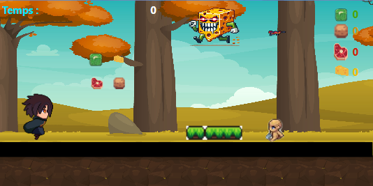
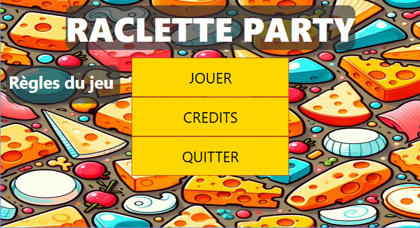
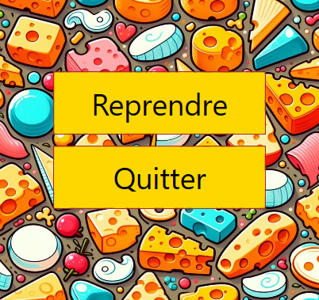

Game Development
2D Platformer Game
December 2024



Project Overview
Development of a 2D video game inspired by the classics (Mario Bros type). This project focused on object-oriented programming and game physics logic.
Technical Challenges
- Implemented gameplay logic and player physics (gravity, jump).
- Created animated sprites and managed animations states.
- Handled collision detection between player and environment.
- Developed a scrolling background system for level progression.